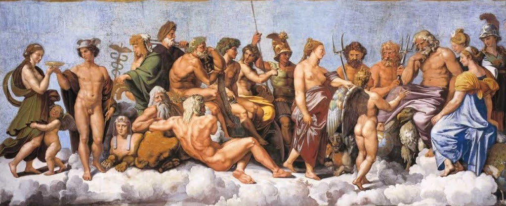

| Yaratılış | Tanrılar ve Tanrıçalar | Kahramanlar | Yaratıklar |
|  |
|---|
Tanrılar, kendilerinin hiçbir kaygıları yokken acınası ölümlülere, sefalet içinde yaşayacakları bir kader tasarladılar. İlyada
Yunan Mitolojisi, Antik Yunan’da evrenin yaratım süreci, tanrı, tanrıça
ve kahramanların yaşayışlarını konu edinen hikaye ve öğretileri içerir.
Ayrıca bu mitoloji eski yunan dininin de temelini oluşturur. Günümüzde
ulaştığımız kaynaklar bu masal ve efsanelerin o dönemde mythos yazarı
diye tanımlanan derleyiciler tarafından oluşturulan yazılı halleridir.
Mitoloji hakkında detaylı bilgi almak için dönemin sanat eserlerindeki
ip uçları da toplanır. Sanat tarihi biliminin konularından birinin de
mitoloji olması bundan kaynaklıdır. Yunan mitolojisi, çoğu Avrupa
mitolojisini hatta Yakın Doğu mitolojisini etkilediği için ayrıca
önemlidir. Tüm Yunan tanrılarını Romalılar’da kabul etmiş ve farklı
adlar kullanmıştır. Bu yazıda Yunan mitolojisini genel hatlarıyla
anlatmaya çalışacağız. Yazıda geçen ara hikayeler, anlatılar ve yunan
mitolojisi efsaneleri sayfanın alt kısmında özel yazılar olarak
detaylandırılmıştır. Yazı, Yunan mitolojisine giriş niteliğinde
olacaktır. Genel olarak Yunan mitolojisi Yakın Doğu ve birçok Avrupa mitolojisini
etkilemiştir. Yunan Tanrılarının her biri Romalılar tarafından kabul
görmüş ve farklı isimler kullanılmıştır. Roma mitolojisi neredeyse
tamamen Yunan mitolojisini baz almıştır. Yunan mitolojisindeki çoğu
efsaneler de insan şeklindedir. Yunan tanrılarının yaratılış hikâyeleri
seçilmiş 12 tanrı (bu 12 tanrı, 4 kadın ve 8 erkekten oluşmaktadır.)
Olimpos Dağı'nda otururlar, her şey Olymposlu Tanrılarla Titanların
savaşlarıyla başlar ve Olymposluların zaferiyle son bulur.Savaştan
sonra Titanlar cezalandırılır. Gaia, Khaos (Khaos zaten Titanlar
tarafından yok edilmişti.), Phoebe ve Kronos (bkz.: Titan) gibi Titanlar
Tartarus'a gönderilir (Tartoros bir titan fakat Tartarus sonsuzluğa
kadar giden bir yeraltı yeridir.). Tartarus'ta sonsuza kadar süren bir
cezaya Olimpos Tanrıları tarafından bırakılır. Yerküreyi taşımak ile
cezalandırılan Atlas gibi, bununla birlikte Titanlardan Olimposluların
yanına geçen Titan tanrıları da vardır Prometheus gibi,Yunan Tanrıları
dünyayı Olympos Dağının tepesindeki bulutların üzerinden idare ederler.
Toplamda 12 Tanrı bulunur.Bu 12 sayısı hiç bozulmaz, bir tanrı
eklenirse bir başkası bu listeden çıkar.Örneğin Dionysos pantheona
dahil olduğunda Hestia Olimpos'tan ayrılmıştır. Şimşeklerin efendisi
Zeus nice savaşlar vererek yönetimi babası Kronos ve onun yardakçıları
titanların elinden almış, 3 erkek kardeşiyle dünyayı bölüşmüştür.
Çekilen kuraya göre gökyüzü Zeus'a, denizler Poseidon'a, yeraltı da
Hades'e düşer. Herkes görev dağılımından sonra Olimpos'a çıkar ve
dünyayı yönetmeye başlarlar ama Olimpos'un ve Olimpos tanrılarının kralı
PrometheusZeus'tur!
Mitolojik anlatım, Yunan edebiyatının neredeyse her türünde önemli bir rol oynamaktadır. Yunan antik çağından kalma tek genel mitoloji el kitabı Bibliotheca'dır. Atinalı Apollodorus MÖ 180-125 arasında yaşamış ve bu konuların çoğunda yazmıştır. Bu eser, şairlerin çelişkili masallarını uzlaştırmaya çalışır ve geleneksel Yunan mitolojisinin ve kahraman efsanelerinin kapsamlı bir özetini sunar. Yazıları mitolojinin temelini oluşturuyor olsa da, ölümünden sonra gerçekleşen olaylar dolayısıyla Bibliotheca tartışılmaktadır. En eski edebi kaynaklar arasında Homeros'un iki destansı şiiri İlyada ve Odysseia bulunur. Geleneksel adına rağmen, "Homerik İlahiler"'in Homeros ile doğrudan bağlantısı yoktur. Bunlar Lirik çağının önceki bölümlerinden gelen koro ilahileridir. Hesiodos, Theogonia adlı eserinde, dünyanın yaratılışıyla uğraşan en eski Yunan mitlerinin en kapsamlı açıklamasını yapar; Tanrıların, Titanlar'ın ve devlerin kökeni; Aynı zamanda soykütüklerini, hikâyeleri ve etiolojik mitleri ayrıntılı bir şekilde anlatır. Hesiodos'un İşler ve Günleri, tarım hayatı hakkında öğretici bir şiir olmasının yanında, Prometheus, Pandora ve Soylar efsanelerini de içerir Lirik şairler genellikle konularını mitlerden aldılar, ancak gelişimleri kademeli olarak daha az anlatılı ve daha imalı hâle gelmiştir.Pindar, Bacchylides ve Simonides gibi Yunan lirik şairleri ve Theocritus ve Bion gibi pastoral şairler, bireysel mitolojik olaylarla ilgilidir. Buna ek olarak, mitoloji klasik Atinalı dramanın merkeziydi. Tragedya oyun yazarları, Aeschylus, Sofokles ve Euripides, eserlerinin çoğunu kahramanların ve Truva Savaşı'nın efsanelerinden aldı. Büyük tragedya öykülerin birçoğu, (Agamemnon ve çocukları, Oedipus, Medea, vb.) bu oyunlar ile klasik hâlini aldı. Komedya oyun yazarı Aristophanes, Kuşlar ve Kurbağalar'da efsaneleri kullandı. Tarihçiler Herodot ve Diodorus Siculus ve coğrafyacılar Pausanias ve Strabo, Yunan dünyasında dolaşıp ve duydukları hikâyeleri kayıt ederek, birçok yerel mitoloji ve efsaneleri genellikle az bilinen alternatif versiyonlar vererek sundu.Özellikle Herodot, çeşitli gelenekleri araştırdı ve Yunanistan ile doğu arasındaki çatışmalarda tarihi ya da mitolojik kökenleri buldu. Herodot, kökeni ve farklı kültürel kavramların harmanlanmasını bağdaştırmaya çalıştı. Helenistik ve Roma çağlarının şiirleri öncelikle kült egzersizinden ziyade edebi bir besteden oluşur. Bununla birlikte, birçok önemli detayları içerir. Bu kategori aşağıdakilerin yazarları kapsamaktadır.
Roma şairleri Ovidius, Statius, Valerius Flaccus, Seneca ve Virgil, Servius.
Geç Antik Dönem'in Yunan şairleri: Nonnus, Antoninus Liberalis ve Quintus Smyrnaeus.
Helenistik dönem Yunan şairleri: Rodoslu Apollonius, Callimachus, Pseudo-Eratosthenes ve Parthenius.
Aynı dönemlerden, mitolojilere atıfta bulunan yazarların arasında Apuleius, Petronius, Lollianus ve Heliodorus bulunmaktadır. Son olarak, Bizans Yunan yazarlarının birçoğu, daha önce kaybedilen Yunan eserlerinden türetilen, efsanenin önemli ayrıntılarını sunar. Arnobius, Hesychius, John Tzetzes ve Eustathius bu yazarlara örnektir. Genellikle mitolojiyi Hristiyan ahlakından bakan bakış açısıyla ele alırlar.
19. yüzyılda Alman amatör arkeolog Heinrich Schliemann tarafından keşfedilen Miken uygarlığı ve yirminci yüzyılda İngiliz arkeolog Sir Arthur Evans tarafından Girit'te keşfedilen Minoan uygarlığı, Homeros'un destanları hakkında mevcut birçok soruyu açıklamaya yardımcı oldu ve tanrı ve kahramanlar hakkında birçok mitolojik ayrıntı için arkeolojik kanıt sağladı.MÖ sekizinci yüzyılın çanak çömlekleri üzerindeki geometrik desenler, Truva döngüsünün sahnelerini ve Herakles'in maceralarını tasvir ediyor. Mitlerin bu görsel temsilleri iki nedenden dolayı önemlidir.İlk olarak, pek çok Yunan efsanesi, edebi kaynaklardan önce vazoların üzerine işlenmiştir. İkincisi, görsel kaynaklar bazen var olan edebi kaynaklarda tasdik edilmemiş mitler ya da efsanevi sahneleri temsil eder. Bazı durumlarda, geometrik sanatta bir efsanenin ilk bilinen temsili, geç arkaik şiirde ilk bilinen temsilinden birkaç yüzyıl öncesine dayalıdır.Arkaik dönem (MÖ 750-50), Klasik (MÖ 480-323) ve Helenistik (MÖ 323-146) dönemlerinde, Homerik ve diğer çeşitli mitolojik sahneler belirir ve mevcut edebi kanıtları tamamlar.
Yunan mitolojisine göre başlangıçta Khaos vardı. Yunanca anlamı açık ya da boşluk olan Khaos, Hesiodos'a göre sonsuz bir boşluk. Bu boşluktan ilkin Gaia doğar, sonrasında Ölüler Ülkesi'nin en derin yeri Tartaraos; daha sonra Eros (bazı kaynaklara göre Afrodit'in oğlu); sonra yeraltı karanlığını simgeleyen Erebos ve yeryüzü karanlığını simgeleyen Nyks(Gece) doğar. Hesiodos'un Thegonia'sında şöyle anlatır Khaos ve sonrasında olanları. Khaos'tu hepsinden önce var olan sonra geniş göğüslü Gaia, Ana Toprak, sürekli, sağlam tabanı bütün ölümsüzlerin, Khaos onlar ki tepelerinde otururlar karlı Romalı şair Virgil Olympos'un, ve yol yol toprağin dibindeki karanlık Tartaros'ta... Khaos'tan Erebos ve kara Gece doğdu, Gecedense Esir ve Günışığı doğdu, Erebos'la sevişip birleşmesinden. Düzensiz boşluktan çıktıktan sonra Gaia bir başına Uranos (Gök) ve Pontos'u (Deniz) doğurur, dağları yaratır.Ardından, oğulları Uranos ve Pontos ile birleşir ve yaratılan evreni tanrısal varlıklar ile doldurur. İlkin Uranos ile birleşir. Bu birleşmeden altı erkek: Okeanos, Koios, Krios, Hyperion, İapetos, Kronos altı dişi: Theia, Rhea, Themis, Phoebe, Tethys ve Mnemosyne olmak üzeri on iki tane titan,Türkçeye tepegöz olarak çevrilen ve tanrılara benzeyen üç Kyklop: Brontes (Gök gürültüsü), Steropes (Şimşek), Arges (Yıldırım) ve yüz kollu olarak anılan Hekatonkheirler: Kottos, Briareus, Gyes doğdu.
Yazar Özhan Öztürk'e göre Yunan dini, gökyüzü, şimşek, deniz, ateş, rüzgâr gibi tabiat elementlerinin ilahi nitelikler kazandırıldığı, tanrıların sevgisi dualarla kazanmaya, öfkesini ise kurbanlarla yatıştırmaya çalışan bir tabiat dini olup, Yunan söylencelerinin çok azı tarihsel döneme dayanmakta büyük çoğunluğu Yunan uygarlığının köklerine dek inmektedir. MÖ 8. yüzyılda yazıya geçirilmeye başlanan bu kadim söylenceler kamu hayatını derinden etkilemiş, MÖ 5. yüzyıla gelindiğinde tüm festivallerde epik destanların anlatılması gelenek hâline dönüşmüştür.
Titanların devrilmesi ile Olymposlu tanrıların başa geçmesinden sonra, farklı bir düzen oluşur. Yeni tanrı ve tanrıçalar tayin edilir.Olymposlu on iki büyük tanrı Olimpos Dağı'nda Zeusun gözetimi altında ikâmet eder.Olymposlu tanrıların yanı sıra Yunanlar farklı kırsal tanrılara da inanırdı.
| Tanrının Adı | Tanrının İşlevi |
|---|---|
| Nypmha | Kırlarda,su ve ormanlarda yaşayan ikinci derece önemli tanrıçalar |
| Pan | Çobanların tanrısı |
| Naiadlar | Suda yaşayan, dere veya ırmağa bağlı periler. |
| Dryades | Ağaç perileri(Eurydike) |
| Hamadryades | Dryadeslerin kardeşi. Ağaç ve ormanları korurlar. |
| Satyrler | Doğayı simgeleyen cinler. |
| Silenos | Yaşlanmış Satyrlere verilen genel addır |
| Erinysler | Öç alma tanrısı |
| Hesperidler | Okeanos ırmanığının ötesinde, altın elma bahçelerine bekçilik eden periler |
| Harpyalar | Kasırga tanrıçaları. (Aello, Okypete) |
Antik Yunan mitolojisinde tanrılar olağanüstü yeteneklere sahip, hastalıktan etkilenmeyen, sadece bazen olağandışı durumlarda yaralanan, ölümsüz ve ölümsüz olma özelliklerinin yanında nektar ve ambrosia ile beslendikleri için solmayan gençliğe sahiptir. Çoğu tanrı hayatın belirli yönleriyle ilişkilidir. Örneğin Aphrodite, aşk ve güzellik tanrıçası, Ares, savaş tanrısı, Hades, yeraltı dünyasının hükümdarı, Athena, bilgelik ve savaş tanrıçası, Poseidon, denizin mutlak sahibidir.
Hristiyanlığın yaygın kabulü mitlerin popülerliğini azaltmadı. Rönesans sırasında klasik dönem baştan keşfedildiğinde Ovidius'un şiirleri şairler, tiyatro yazarları ve ressamlar üzerinde büyük etkiye sahip oldu. Rönesans'ın erken dönemlerinden itibaren, Leonardo da Vinci, Michelangelo ve Rafael gibi ressamlar geleneksel Hristiyan temalarının yanında Yunan mitolojisine dair temalar da işledi.Latince yazın ve Ovidius'un eserleri aracılığıyla Yunan mitolojisi İtalya'da ortaçağ ve Rönesans döneminde Petrarca, Boccaccio ve Dante gibi şairleri etkiledi. Kuzey Avrupa'da Yunan mitolojisi görsel sanatlarda aynı derecede bir etkiye sahip olmasa da edebiyata olan etkisi açıktır. Chaucer'dan başlayarak, Milton, Shakespeare ve daha yakın zamanda Robert Bridges'ın aralarında olduğu İngiliz yazarların imgeleminde Yunan mitolojisi yer tuttu. Fransa'da Racine, Almanya'da Goethe Yunan tiyatrosunu ve bu süreçte Yunan mitolojisini uyarladı.18. yüzyıl aydınlanmasında Yunan mitolojisine karşı Avrupa çapında bir tepki doğsa da mitoloji tiyatro yazarları için önemli bir esin kaynağı olmaya devam etti. Bunun örnekleri arasında Handel ve Mozart'ın operaları için yazılan librettolar vardır.18. yüzyılın sonlarına doğru romantizm mitoloji de dahil Antik Yunanistan'ın tüm mirası üzerine yeni bir heves getirdi. Britanya'da Yunan tragedyalarının ve Homeros'un yeni çevirileri Tennyson, Keats, Byron, Shelley gibi şairlere, Leighton, Lawrence Alma-Tadema gibi ressamlara ilham kaynağı oldu.Christoph Gluck, Richard Strauss, Jacques Offenbach gibi sanatçılar Yunan mitolojisinin temalarına besteler yaptı.Thomas Bulfinch ve Nathaniel Hawthorne gibi 19. yüzyıl Amerikan yazarları klasik dönem mitleri anlaşılmadan İngiliz ve Amerikan edebiyatının anlaşılamayacağı görüşündeydi.[46] Daha yakın zamanlarda klasik temalar Fransız tiyatrosunda Jean Anouilh, Jean Cocteau ve Jean Giraudoux, ABD tiyatrosunda Eugene O'Neill ve İngiliz tiyatrosunda T. S. Eliot tarafından yeniden yorumlanmıştır. Nesirde benzer bir yeniden yorumlama James Joyce ve André Gide tarafından gerçekleştirilmiştir.
İlyada destanı hakkında daha fazla bilgi